PoBox: five new boxers
The eight-hour league, 1 October 23:08 to 2 October 07:00 · what was built, what the charts say, what did not work
Five rigged meshes went in: Trump, Grandma, Grandpa, Nick and a second Matt (Lil Matt). Each came out with a body of its own, a way of boxing of its own, and a place in the game beside Matt and Zombie. All seven are on the boxer menu and all 21 pairings have a ring. Four of the five box the way they were meant to; Trump is the least finished. Three of the fifteen ring sessions taught nothing and were thrown away.
The five
| Boxer | Body | Strength, speed | Meant to be | Final policy, in its last kept session | Did the style take? |
|---|---|---|---|---|---|
| Trump | 1.90 m, 109 kg | 1.10, 1.00 | Brawler: comes forward, big shots to the head, little guard | 1.68 landed a second at 8.7 m/s, all to the head, no blocks (against Nick, round 3) | Partly. A head-hunter with no guard, yes. But he does not come forward: Grandma and Grandpa both kept him out of range and he landed nothing on either. |
| Grandma | 1.70 m, 88 kg | 0.53, 0.75 | Counter-puncher: tight guard, answers to the body | 1.93 landed a second at 8.6 m/s, 99% to the body, 1.37 blocks a second, down in 3% (against Trump, round 5, hurt rule on) | Yes. The clearest of the five. |
| Grandpa | 1.62 m, 80 kg | 0.48, 0.75 | Out-boxer: long range, patient, the left hand | 1.20 landed a second at 4.0 m/s while Zombie landed 0.20; he stands at 0.89 m (against frozen Zombie, round 5) | Yes. Nobody in the roster learned to reach him. |
| Nick | 1.65 m, 59 kg | 0.83, 1.00 | Swarmer: always closing, many light punches | 1.80 landed a second at 7.3 m/s, 76% to the head, down in 6% (against Lil Matt, round 5); 2.9 to 3.1 a second in rounds 2 and 3 | Yes. The highest rate in the roster all night. |
| Lil Matt | 1.64 m, 81 kg | 0.82, 1.00 | Body puncher: gets inside, the right hand | 1.38 landed a second at 7.0 m/s, down in 36% (against Nick, round 5, hurt rule on); 1.85 a second, all to the body, in round 4 | Mostly. All body until the hurt rule came on; then 39% to the head, because a knockdown is paid for. |
Strength and speed are beside a trained adult's (Matt is 1.00). The grandparents' figures are the age-realistic ones the owner chose. "Landed" is punches arriving faster than 1 m/s; "down in" is the share of episodes that ended with that boxer on the floor.
How each body was made
The skeleton is read out of the mesh, and so are the sizes: each collision shape is a capsule, a box or a sphere fitted inside the boxer's own skin (blue, below), measured from the outline of each limb. Mass is the mesh's volume at the density of water, held to what a person can be. Four of the five skeletons had been placed by an automatic rigger and were up to 16 cm out of symmetry; they were made symmetric. Trump's file has no real scale and was set to 1.90 m. Every body passed the house check before training: no part touches another in the T-pose, the guard, or 23 steps of walking and punching. Trump's trunk had to be slimmed from 13.5 to 11.2 cm for that.
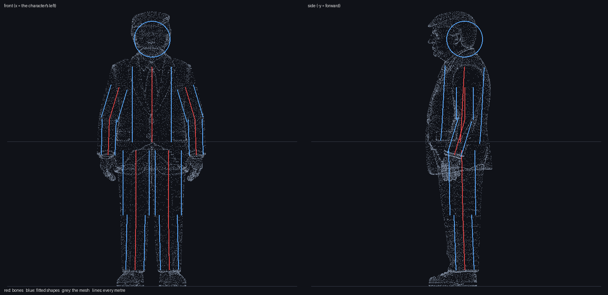
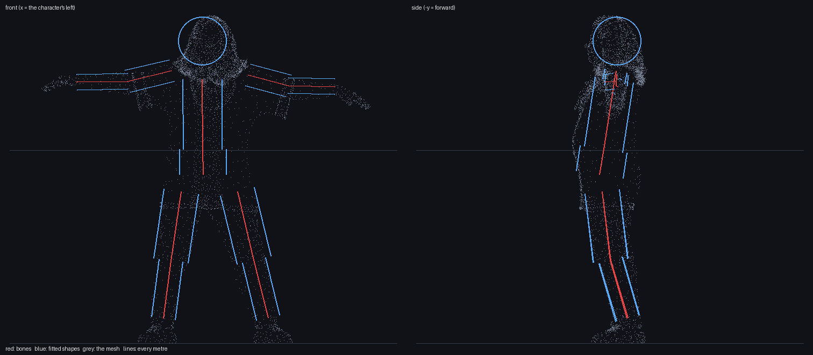
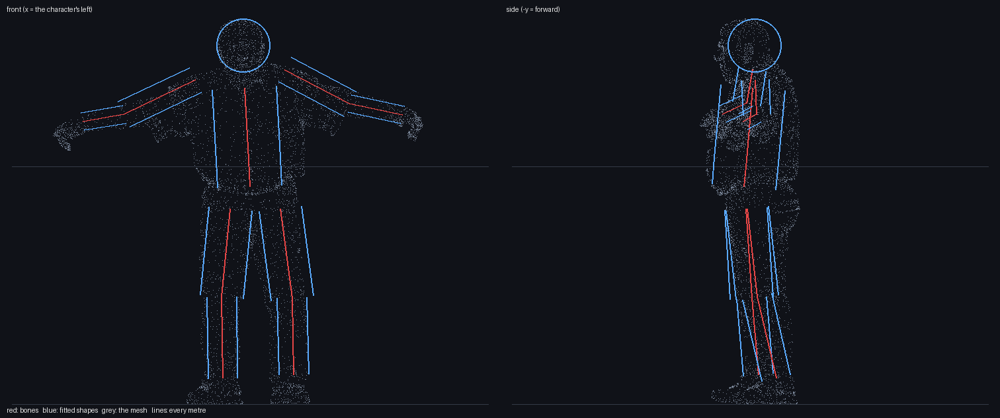
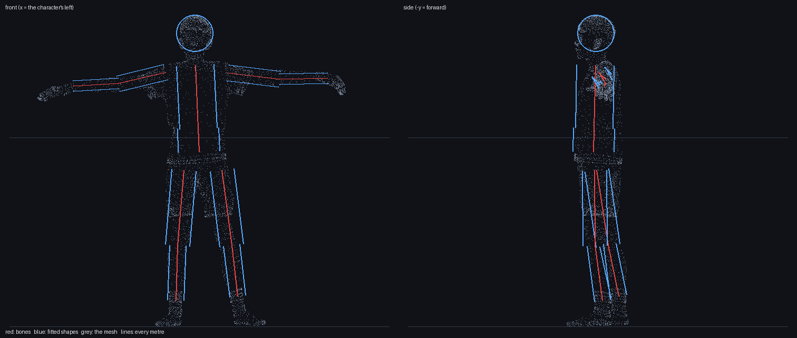
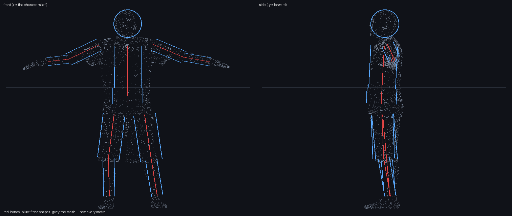
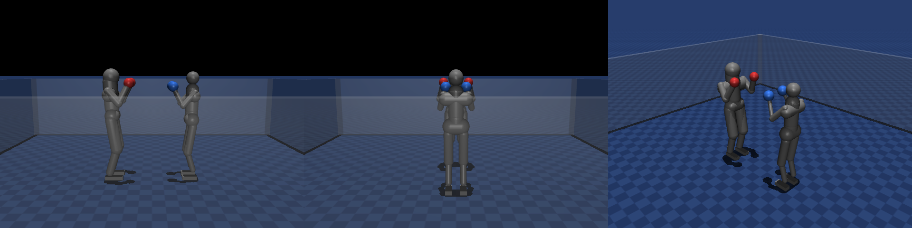
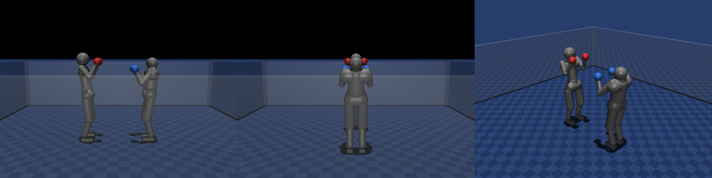
How a personality is trained
Nothing about a punch changes from boxer to boxer. What changes is what each is paid for the same
exchange: Trump is paid most for a hard shot to the head and charged little for being hit; Grandma is paid
for stopping a punch and more for landing one straight after; Grandpa is paid to stand at 0.90 m and
charged for being crowded; Nick is paid in full for punches a third of a second apart and for walking in;
Lil Matt is paid nearly double for the body. The numbers are in training/roster.json.
The schedule: 18 minutes each on the heavy bag, starting from Matt's bag policy rather than from nothing, then five rounds of three ring sessions of 25 minutes. Every new boxer met the other four and one veteran; Matt and Zombie only sparred, their policies frozen. From round 4 the game's hurt rule was on (head shots weaken the legs). 1.5 billion fighter-steps in 7.87 hours.
The three charts
TensorBoard, one line per boxer through its whole night (run names boxer_<name>): light blue Trump, green Grandma,
orange Grandpa, dark red Nick, grey Lil Matt. The first 400 or so steps of each line are the bag.
1. Punches landed a second
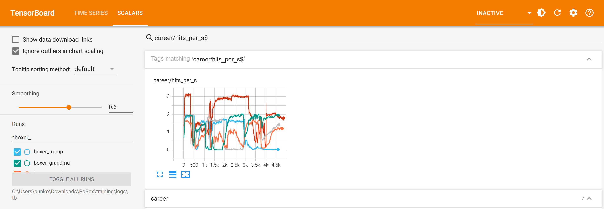
2. How often a boxer ends up on the floor
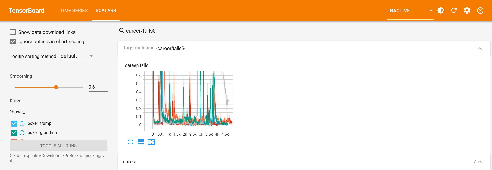
3. Share of punches that go to the head
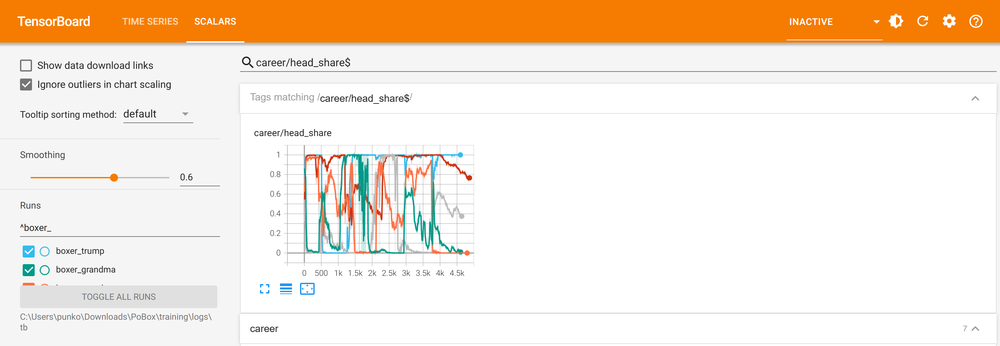
Against the earlier runs
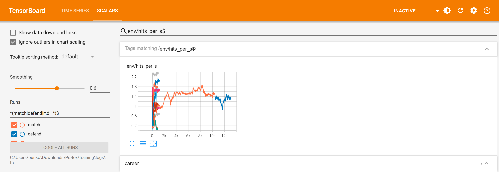
| Matt and Zombie, 1 October | The five, this run | Better or worse | |
|---|---|---|---|
| Bag stage | 45 min each, from nothing: fall rate 0.01 to 0.02, 2.0 landed a second | 18 min each, from Matt's bag policy: fall rate 0.01 to 0.03, 1.5 to 3.0 a second | Better. Starting from a brain that already boxes gets a new body to the same place in under half the time. |
| Ring time per boxer | 381 min | 125 min scheduled, 75 to 125 kept | A third or less. |
| Landed at the end | 1.5 a second each | 1.2 to 1.9 a second | About the same, in a third of the time. |
| Losing the punch at the start of the ring | Matt for 67 minutes | About 10 minutes | Better. |
| Sessions that taught nothing | none of the match; both 30-minute follow-ups | 3 of 15, and Trump's last two | Worse. Two learners can settle on not fighting; one policy each, short sessions and big style differences made that easy. |
| Defence | none until the defend rung | Grandma 1.4 to 3.2 blocks a second; Grandpa 1.1 | Better for those two. |
In the picture the long orange line is the eight-hour match and the blue one after it the defend rung; the short lines bunched at the left are this run's fifteen 25-minute sessions.
What went wrong, and what was done
| Session | What happened | Done |
|---|---|---|
| Round 2, Grandma v Grandpa | Neither boxed: 0.00 and 0.11 landed a second. He stood at 0.95 m, out of her reach, and both were charged 1.4 times for a punch taken. | Session rejected; both went on from their round-1 policies. |
| Round 3, Grandpa v Lil Matt | Lil Matt landed 0.01 a second all session: shortest arms in the roster, nothing paid for walking in. Grandpa's rate fell from 1.06 to 0.18. | Session rejected; Grandpa back to round 1, Lil Matt to round 2. Styles changed: Grandpa's charge for a punch taken 1.4 to 1.0 and for being crowded 0.8 to 0.5; Lil Matt paid 0.25 for walking in. |
| Round 4, Trump v Grandpa | Grandpa 1.65 a second, Trump 0.13. | Grandpa's policy kept (his best). Trump back to round 3. |
| Round 5, Trump v Grandma | Grandma 1.93 a second, Trump 0.03 from first iteration to last: he only wants the head, and hers is 9 cm behind her hips and guarded. | Grandma's policy kept. Trump's final policy is the round-3 one. |
The common thread, noticed first by the other session working on the project that night: two boxers who are both learning can agree a truce, and a boxer facing a frozen opponent that keeps punching cannot. Every session against frozen Matt or Zombie produced a boxer that boxed.
training/tools/viewer_leash.ps1, which sets Windows' graphics preference for python.exe).In the game
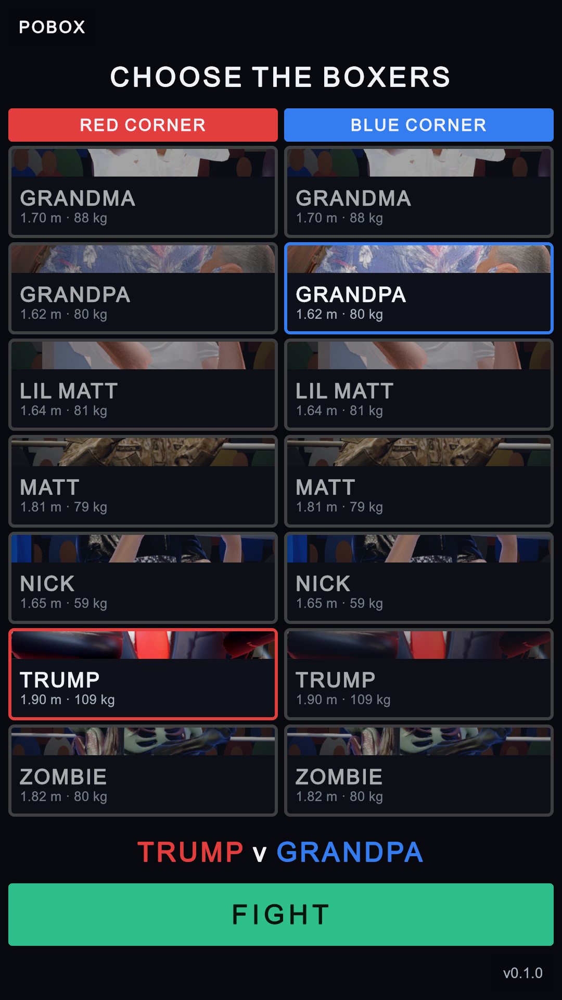
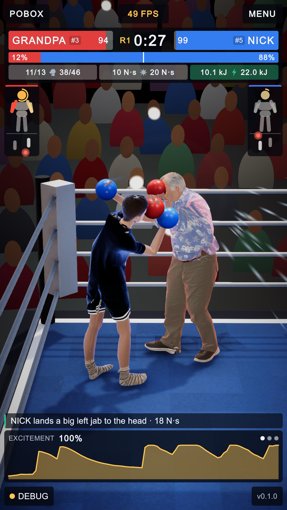
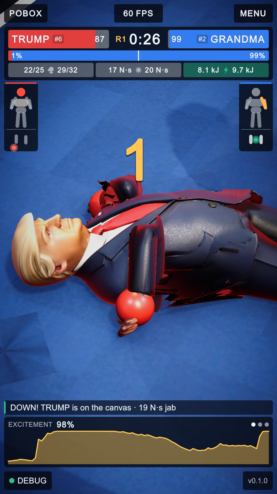
Three pairings were played from the menu for 45 seconds each, on MuJoCo as the game runs it:
| Pairing | What happened in the first round |
|---|---|
| Trump v Grandma | Trump threw 47 and landed 44, but only 2 clean; he went down once and finished the round on 68 health. |
| Grandpa v Nick | Grandpa landed 24 of 26, 21 of them clean, and went down four times. |
| Lil Matt v Zombie | Lil Matt landed 65 of 90, put Zombie down twice and went down twice himself. |
The game is harsher than training: its hurt rule puts boxers down far more often than the last two rounds of the league did, and there is no get-up policy yet, so a boxer who survives the count is stood back up.
The exam afterwards: nobody passes yet
Straight after the league the other session examined all seven (training/tools/exam.py,
results in training/logs/exam_0.log): plain C MuJoCo, the game's ring, every one of the 21
pairings for four rounds of 45 seconds, no exploration noise, each boxer marked against its own strength
and style. 0 of 7 pass, veterans included, and for the same reason: footing against an opponent a
boxer has not trained with. These figures are from before that session's own training rungs.
| Boxer | Footing (falls nobody caused, worst pairing) | Attack (average over six opponents) | Near-silent against |
|---|---|---|---|
| Trump | 1.67 a minute (v Matt) | 0.53 a second | Grandma 0.02, Grandpa 0.00, Zombie 0.00 |
| Nick | 2.33 a minute (v Grandma, v Zombie) | 1.20 a second | Zombie 0.32, Grandpa 0.39 |
| Grandma | 2.67 a minute (v Zombie) | 0.70 a second | Matt 0.09 |
| Grandpa | 2.67 a minute (v Matt, v Nick) | 0.65 a second | |
| Lil Matt | 1.33 a minute (v Zombie); guard also fails (stops 27% of head shots) | 0.89 a second | |
| Zombie | 5.67 a minute (v Nick) | 0.90 a second | Grandpa 0.00 |
| Matt | 1.00 a minute (v Trump) | 0.44 a second | Lil Matt 0.00, Grandpa 0.02 |
What this says about the league: a boxer is good against the opponents it met and unsteady against the ones it did not, and five 25-minute sessions were not enough meetings. In the league's own sessions the same boxers fell in 0 to 6% of episodes. The other session's next step is a "gauntlet": one learner against all six others at once, the others frozen.
Not done, or not checked
- 18 of the 21 pairings have not been played in the game. Each has its ring model; only three were watched.
- Grandma v Grandpa will probably be a stand-off in the game, as it was in training.
- Trump does not close on an opponent who stays out of range, and has had the hurt rule in no session that was kept.
- The grandparents' joint-speed limit did not slow their gloves. It is a charge in training, not a stop: Grandma's punches arrive at 8 m/s. Their lower strength is real (it is in the model); a hard speed limit is not.
- Skin. The meshes ride on the bodies and look right in the fight, with some torn sleeves where the automatic rigger's weights are poor (Trump's left arm). In the first seconds of a bout the new boxers drew as red and blue shells only (
img/39_shells_at_intro.png); they were fully drawn by the fight. Not investigated. - Portraits on the menu cards show a strip of chest, not a face: the cards are short with seven boxers.
- No get-up, and Matt and Zombie have never trained against the new five. Frozen Matt landed 0.43 a second on Nick against 1.3 on Zombie. The other session has a queue for both.
- One test file is unused:
test_GRANDMA_riggedTenCent.glbhas no skeleton.